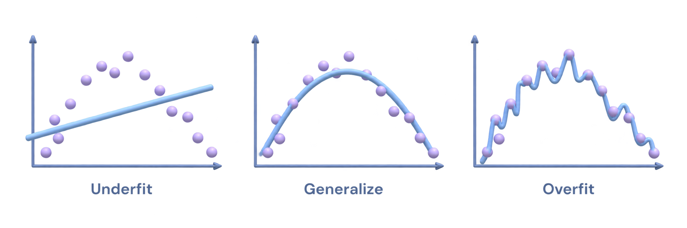
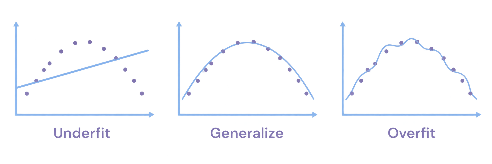
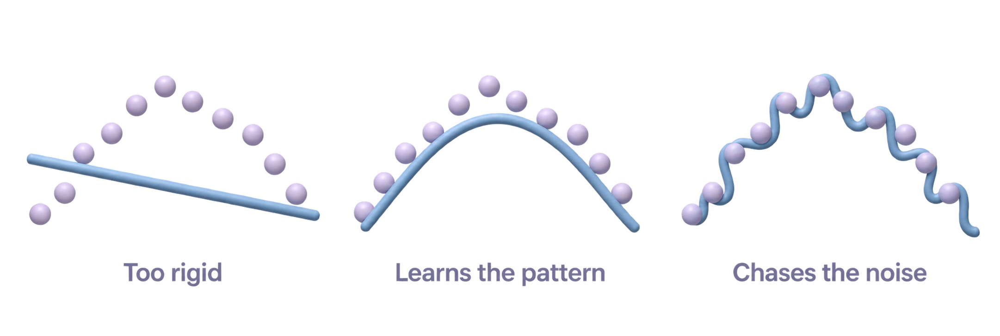

A · Familiar plots

The strongest distinction between a rigid line, a broad trend, and an over-flexible fit. Provisional choice in the app.
Three transparent studies. Same blue for every curve. No cream tiles, orange markers, or background fill.

The strongest distinction between a rigid line, a broad trend, and an over-flexible fit. Provisional choice in the app.

The lightest graphic treatment. The overfit curve is less pronounced.

A quieter composition without axes. The points are too orderly to make the noise lesson as clear.
These illustrations communicate an idea. The live lab supplies actual fitted curves and measured errors.